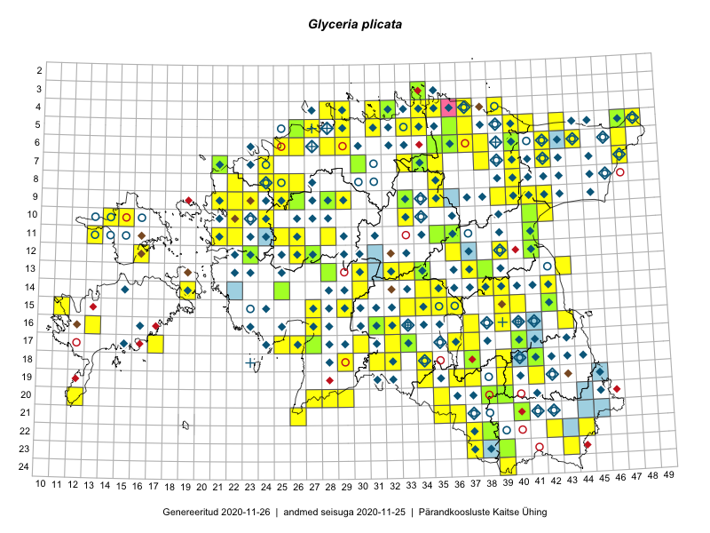

Glyceria plicata
Uuendatud: 2016-12-01
Kaardile koondatud taksonid: Glyceria notata Chevall.; Glyceria plicata (Fr.) Fr.

Kaart põhineb 132 kirjel, neist vaatlusi 131 ja eksemplare 1.
Kuvatud viited 20 esimesele andmebaasikirjele, ülejäänud PlutoFis
- Malle Leht: 2015-07-09: : ala
- Peedu Saar: 2015-07-15: 15-39: ala
- Tiit Hallikma, Toomas Kukk: 2015-07-22: 05-47: ala
- Toomas Kukk, Meeli Mesipuu, Thea Kull, Eerik Leibak, Peedu Saar: 2014-07-11: 06-44: ala
- Peedu Saar: 2015-08-22: 11-41: ala
- Meeli Mesipuu: 2015-07-11: 14-19: ala
- Thea Kull, Eerik Leibak: 2015-07-21: 07-47: ala
- Thea Kull, Meeli Mesipuu: 2015-08-12: 16-43: ala
- Thea Kull: 2015-08-07: 14-38: ala
- Meeli Mesipuu, Timo Luhamäe: 2015-07-23: 05-48: ala
- Maria Abakumova: 2015-07-23: 15-33: ala
- Maria Abakumova, Helle Mäemets: 2015-07-30: 15-34: ala
- Maria Abakumova: 2015-07-07: 16-32: ala
- Maria Abakumova, Tiit Hallikma: 2015-07-09: 17-32: ala
- Maria Abakumova: 2015-07-24: 18-34: ala
- Ülle Jõgar, Illi Tarmu, Kai Rünk: 2015-07-03: 13-38: ala
- Erkki Otsman, Sergei Smirnov: 2015-07-12: 05-29: ala
- Erkki Otsman, Sergei Smirnov: 2015-07-01: 09-33: ala
- Mari Reitalu, Oliver Parrest: 2015-07-16: 15-11: ala
- Oliver Parrest: 2015-08-15: 20-12: ala